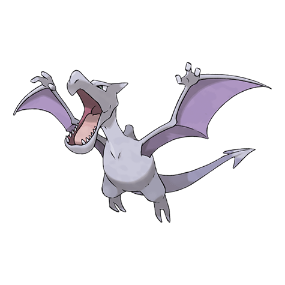

Назад
Аэродактиль

Аэродактиль — Покемон 1 поколения под номером 142 в Покедекс. Обитает он в регионе Канто и относится к Каменному и Летающему типу. Аэродактиль не имеет постоянной стадии эволюции. Аэродактиль — Покемон из эпохи динозавров. Он был восстановлен из генетического материала, извлечённого из янтаря. Считается, что в древние времена он был царём небес.
Тип:
Каменный
Летающий
Эволюция
# 142 Аэродактиль